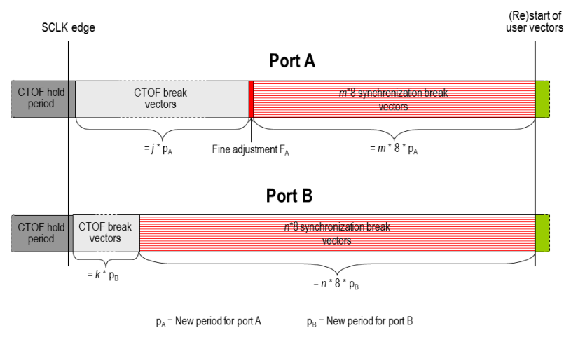
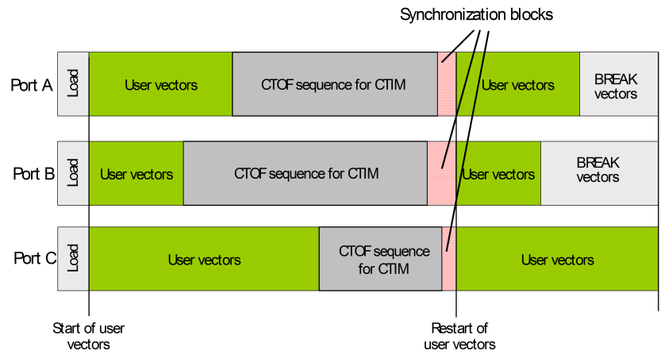

Synchronization within sequencing groups
When different ports of a multi-port setup are executed at different speed their user vectors can be synchronized exactly in the sense that they are started simultaneously after each timing set change (CTIM instruction). This includes the internal CTIM, which is by default executed at the start of a functional test. To synchronize these ports exactly, they need to be included in the same sequencing group (see Defining sequencing groups for details).
Default sequencing group
Ports that are not explicitly associated with a sequencing group belong to the default sequencing group. In particular, if you do not define any sequencing groups at all, then all ports of the setup belong to the default sequencing group and will be synchronized as indicated above.
The synchronization mechanism
In detail, the synchronization after a CTIM instruction works as follows:
Every timing set change is associated with a so-called CTOF (Change Timing On the Fly) sequence, which consists of
- a certain number of break vectors with the old timing,
- a hold period during which no signals are sent to the DUT and the new timing is activated, and
- a certain number of break vectors with the new timing (their number depends on the new period length).
During the hold period, the new timing becomes valid for all ports of the sequencing group at the same system clock (SCLK) edge. The system clock is the reference clock which coordinates the operation of the channels. For more information see Changing the timing set.
The new period lengths can be different for different ports. But then these ports will usually not (no longer) be synchronized after the CTOF sequence. In order to (re-)synchronize them, SmarTest inserts further synchronization break vectors before the (re)start of the user vectors. But adding break vectors may not always be sufficient to exactly synchronize the ports. In this case, SmarTest will insert an additional fine adjustment, which is smaller than the new period length, for one or more of the ports in order to ensure a simultaneous (re)start of the user vectors.
Synchronizing user vectors after a level set change
Level set changes within a pattern are executed with the CLEV instruction. The execution of CLEV is also associated with a CTOF sequence. However, you cannot resynchronize the restart of the user vectors after a level set change by simply putting the respective ports into the same sequencing group. As a workaround, you can insert a CTIM instruction activating the current timing set again immediately after the CLEV instructions.
Example
The following figure illustrates the algorithm by a sequencing group consisting of two ports:

The variables j, k, m, n, are integers.
Observe that the synchronization is based on the simultaneous change to the new period within the CTOF sequence which is triggered by a CTIM instruction. Therefore, the user vectors can only be synchronized exactly at the start of a functional test if a timing set is activated before the first user vector. By default, this condition is satisfied for any sequencing group that contains more than one port (even if the primary sets are the same as before). But if this activation is suppressed with the FTCG firmware command (option ON), exact synchronization is not possible.
The following figure shows a "macroscopic" view of a multi-port burst for three ports that belong to the same sequencing group:

Observe that the user vectors start synchronously not only at the start of the testsuite, but also after the CTIM instruction that occurs in the sequencer programs of all three ports.
Functional changes
- Introduced before SmarTest 6.3.2